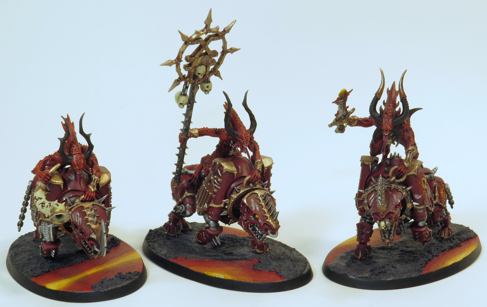
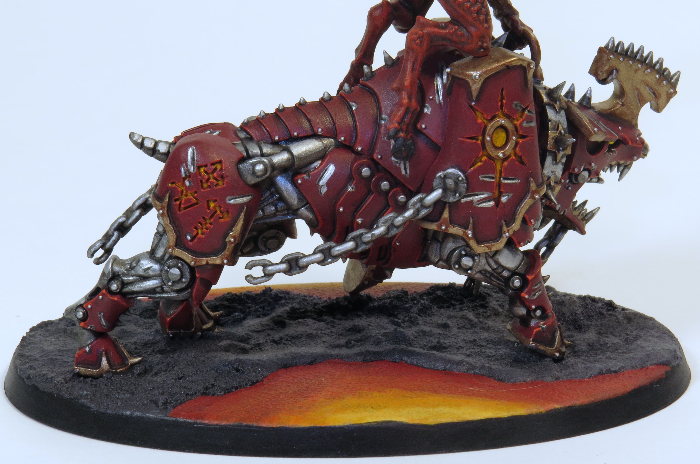
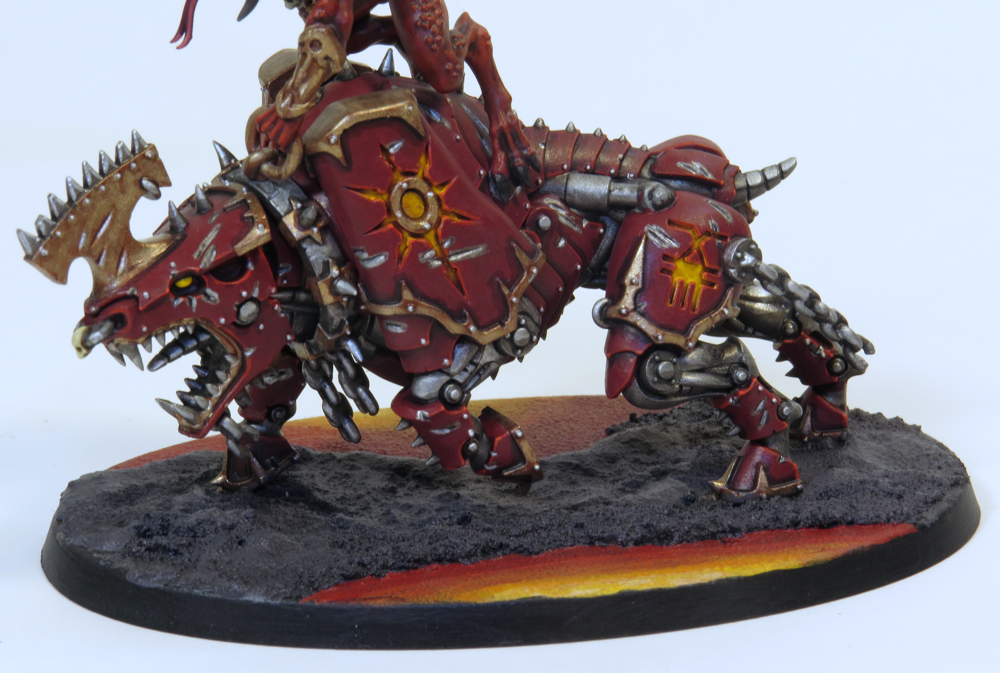
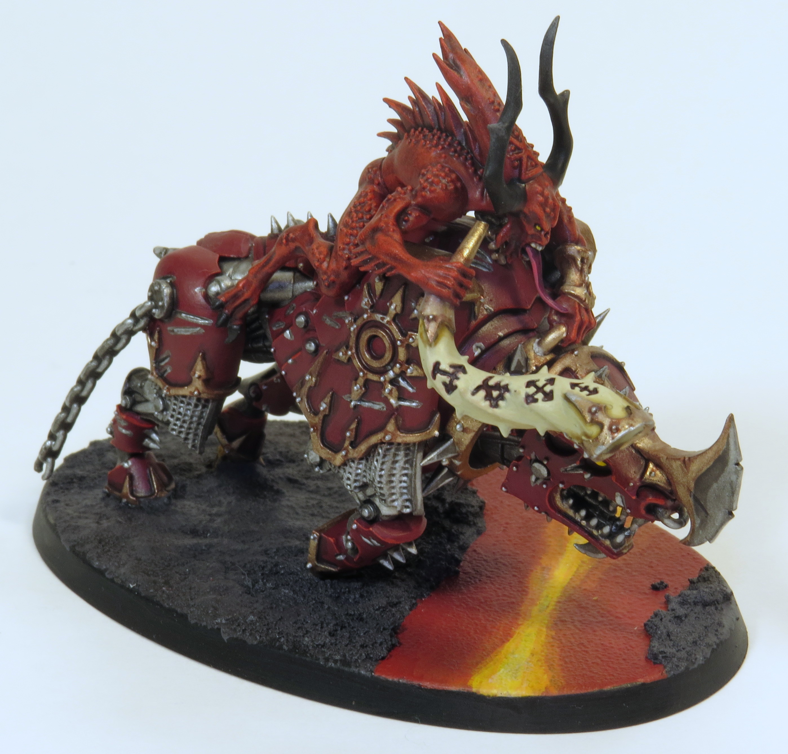
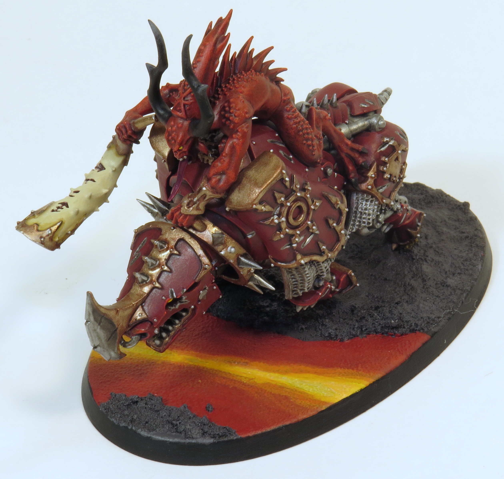
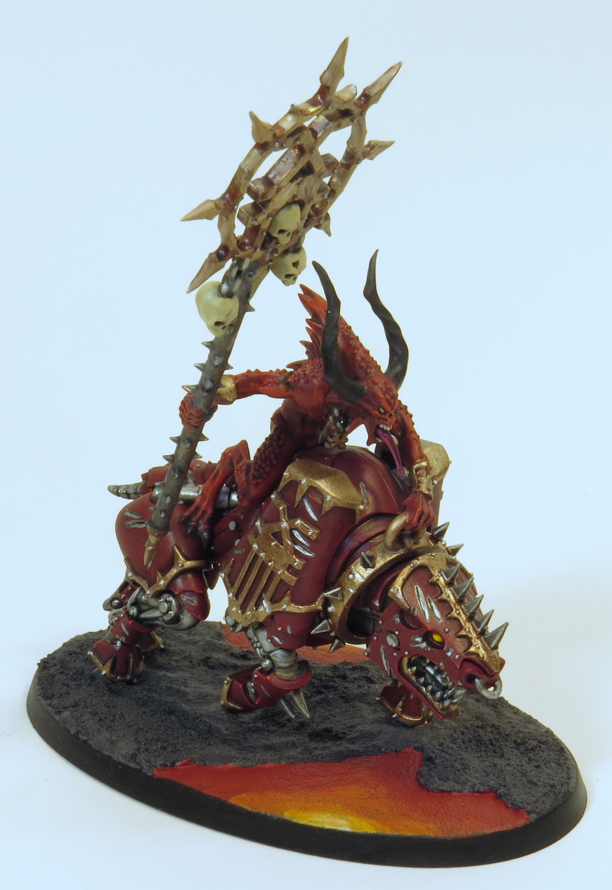
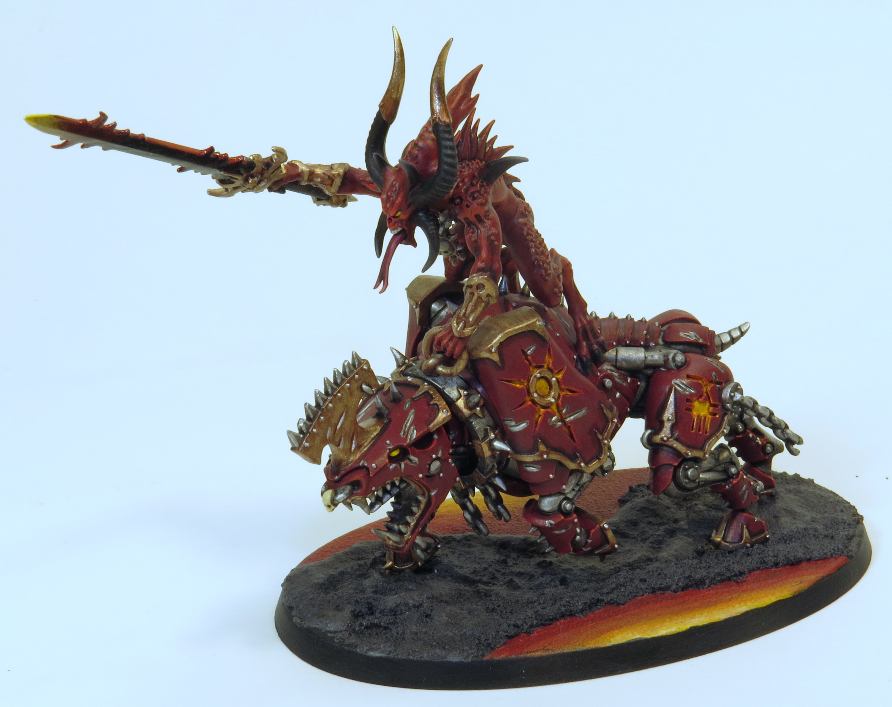

Really fun models, lots of armour plates and rivets. Extremely proud of the glow coming from inside the lead bloodcrusher







Paints Used:
Bloodletter Skin: Mephistion Red, Carroburg Crimson all over, drybrush Evil Sunz Scarlet, Carroburg Crimson again on fins, light drybrush and highlight Wild Rider Red
Armour: Khorne Red, Nuln Oil in recesses, edge highlight Evil Sunz Scarlet and Wild Rider Red
Armour Scratches: Leadbelcher, Nuln Oil in scratches, highlight Stormhost Silver on one side
Rivets: Stormhost Silver
Mechanical Pieces/Steel: Leadbelcher, Nuln Oil all over, highlight and edge highlight Stormhost Silver